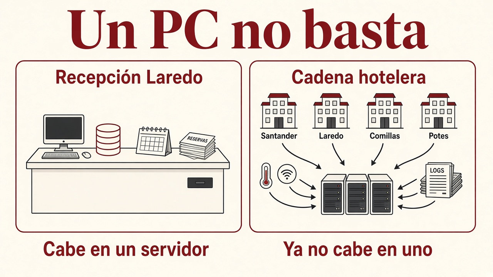
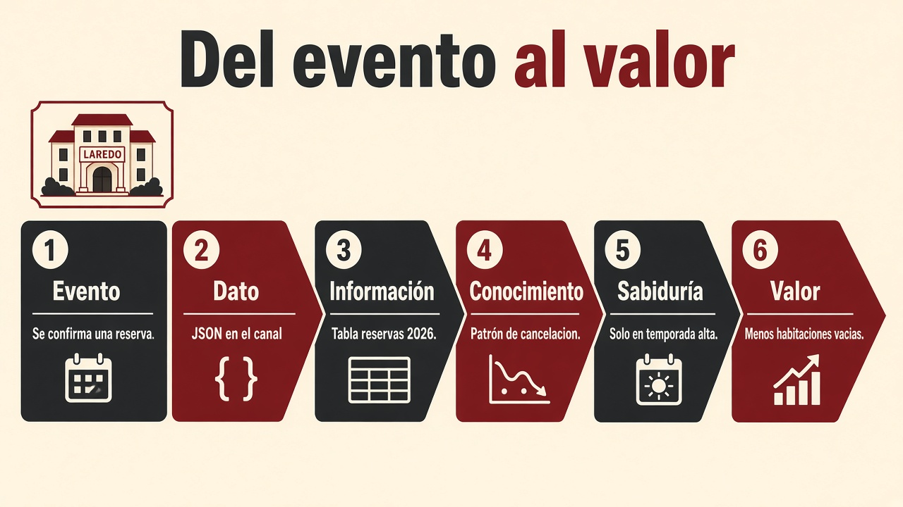
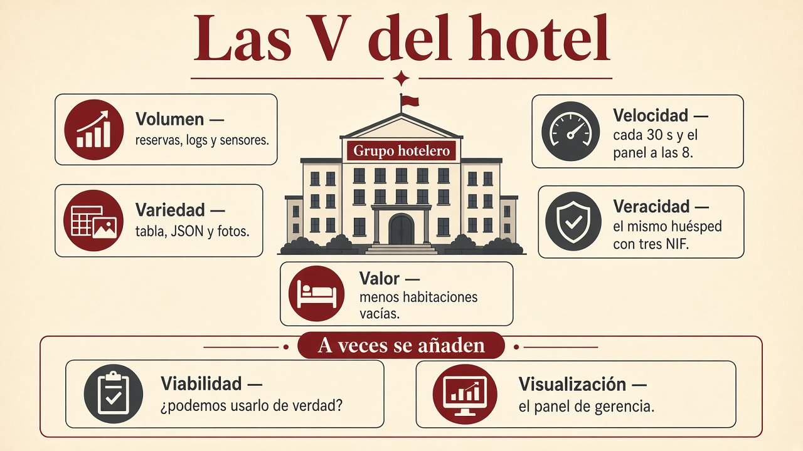
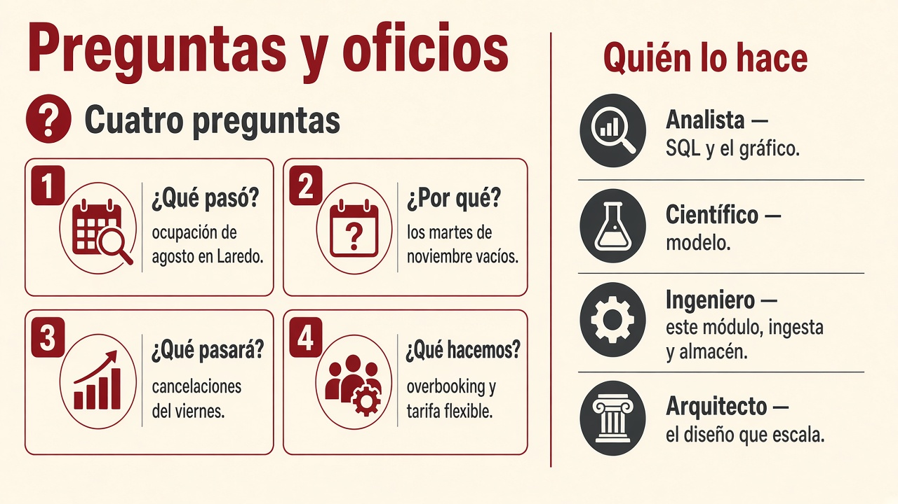

1.1. Por qué Big Data y las 5 Vs¶
Imagina una empresa que empezó con un servidor, una base de datos relacional y un proceso que, cada noche, genera un informe. Durante años eso basta: el disco no se llena, las ventas se pican en caja sin esperar y todas las facturas tienen las mismas columnas.
Un día el volumen de clientes se multiplica, aparecen sensores, la web deja logs cada segundo y marketing quiere cruzar todo eso ahora. El servidor no “se pone un poco lento”: deja de ser el diseño adecuado. Ahí entran las metodologías de macrodatos / Big Data.
Big Data no es “tener muchos Excel”. Es un conjunto de métodos y tecnologías para capturar, almacenar, procesar y presentar datos que un sistema de una sola máquina, al estilo clásico, no puede tratar con garantías de tiempo, coste o variedad.
No hay una ley que diga “a partir de X terabytes ya es Big Data”. El criterio práctico es este: el sistema tradicional no escala en volumen, velocidad o variedad (o el coste de agrandar esa máquina es inasumible).
Pregunta que debes saber responder
“¿Esto es un problema de Big Data?” no se contesta con el logo de una herramienta. Se contesta mirando si el diseño de siempre (un servidor, un esquema fijo, un lote nocturno) sigue siendo viable.
Un PC no basta (y a veces sí)¶
No todo proyecto con datos es Big Data. En el grupo hotelero, el día 1 recepción de Laredo pica reservas en un programa y finanzas saca el Excel del mes: eso es Small Data. Cabe en un PC. Las destrezas de este módulo (limpiar, unir, guardar con criterio) también sirven ahí.
A los seis meses hay cuatro hoteles, sensores cada 30 s, logs de la web y fotos de reformas. Un servidor ya no es el diseño. Ahí sí hablamos de Big Data: hay que repartir el trabajo.
Se dice a menudo que los datos son el petróleo. La analogía se queda corta: el crudo sin refinar no mueve el coche. Guardar por guardar, en la década de 2020, no basta. Hay que conocer el dato y cuidarlo (calidad, linaje, permiso). Si no, gerencia decide con un número bonito y falso.

De los eventos al valor¶
Antes de hablar de Hadoop, Parquet o Pentaho, hay que ver el viaje del dato. Es el mismo viaje que luego recorrerás en las capas de la arquitectura.
Piensa en el grupo hotelero de Cantabria en agosto (empieza por Laredo si te ayuda a imaginar temporada alta):
- Evento. Ocurre algo en el mundo: un huésped reserva, un sensor de ocupación cambia, alguien paga con tarjeta.
- Dato. Ese hecho queda registrado: una fila, un JSON, una foto del DNI, una línea de log. Todavía no “significa” nada por sí solo; solo está guardado.
- Información. Organizas esos datos: reservas del día en una tabla, fotos en carpetas por fecha. Ya puedes consultar (“¿cuántas llegadas hay mañana?”).
- Conocimiento. Encajas patrones: “los que reservan el viernes por la tarde cancelan más”. Eso ya no es una fila: es una regla o un modelo.
- Sabiduría. Sabes cuándo aplicar esa regla. El modelo de cancelaciones del hotel de playa no se copia ciego a un albergue de invierno.
- Valor. Tomas una decisión que mejora el resultado: overbooking más fino, menos habitaciones vacías, una oferta a tiempo. La diferencia entre actuar con esos datos y actuar a ciegas es el valor.

| Escalón | Qué es | Ejemplo del hotel |
|---|---|---|
| Evento | Algo ocurre | Se confirma una reserva |
| Dato | Queda registrado | JSON de la reserva en el canal |
| Información | Datos organizados | Tabla “reservas_2026” |
| Conocimiento | Regla o modelo | Patrón de cancelación |
| Sabiduría | Usarlo en su contexto | Solo en temporada alta |
| Valor | Mejor decisión | Menos habitaciones vacías |
Las tecnologías de Big Data capturan, integran, almacenan y procesan. Extraer valor (modelos, predicciones, diagnósticos, un sistema que actúa) lo hacen tres oficios que se pisan y no son lo mismo: minería de datos, ciencia de datos e inteligencia artificial (IA). Las tres beben de la infraestructura de este módulo; ninguna es Big Data.
Tres oficios sobre el mismo dato (y no son sinónimos)¶
Un viernes en Laredo tenéis el JSON de reservas, los logs de la web y el sensor del parking. Tres personas miran el mismo lago y hacen trabajos distintos:
| Oficio | Pregunta que se hace | Qué entrega | Ejemplo del hotel |
|---|---|---|---|
| Minería de datos | «¿Qué patrones ya están en lo guardado?» | Reglas, grupos, anomalías | «Quien reserva el viernes por la web y pide parking cancela más.» |
| Ciencia de datos | «¿Qué hay que preguntar, con qué dato limpio, y cómo se lo cuento a quien decide?» | Pregunta bien hecha, análisis, modelo y un relato que gerencia entiende | «¿Por qué los martes de noviembre estamos vacíos?» Limpia canal web frente a OTA, elige el KPI, enseña un gráfico y no copia el modelo de playa a Potes. |
| IA | «¿Qué sistema percibe, decide o genera sin que un humano mire cada fila?» | Un producto que actúa (o responde) | Al confirmar la reserva, un modelo puntúa el riesgo de cancelación y el canal ofrece tarifa flexible; un chatbot responde «¿queda habitación al mar?»; una cámara cuenta coches del parking. |
La minería descubre. La ciencia de datos encuadra, limpia, modela y explica. La IA pone un sistema a hacer una tarea que parece inteligente (percibir, clasificar, dialogar, recomendar). Podéis minar un Excel de 50 MB; podéis hacer ciencia de datos con una encuesta de 200 filas; podéis tener IA con reglas (un motor de ajedrez clásico) sin un lago. El clúster ayuda cuando las 5 V de más abajo duelen; no define el oficio.
flowchart TB
subgraph bda [Este módulo: Big Data]
E[Evento] --> D[Dato guardado]
D --> I[Información consultable]
end
subgraph extraer [Extraer valor]
I --> M[Minería: patrones]
I --> C[Ciencia de datos: pregunta + calidad + relato]
M --> C
C --> K[Conocimiento]
K --> IA[IA: sistema que actúa]
C --> V[Decisión humana]
IA --> V
end
V --> VAL[Valor: menos habitaciones vacías]
VAL -.->|el modelo se queda viejo| DEn qué se parecen¶
- Las tres buscan valor: una decisión mejor que ir a ciegas.
- Las tres se hunden si falla la veracidad (sensores descalibrados, el mismo huésped con tres NIF).
- Las tres pueden vivir sin Hadoop si el conjunto cabe en una máquina.
- Ninguna sustituye a capturar, guardar y procesar: sin dato usable, el algoritmo más brillante puntúa basura.
En qué se distinguen¶
Minería de datos (data mining) viene del descubrimiento de conocimiento en bases de datos (a menudo veréis la sigla KDD, Knowledge Discovery in Databases). Caja de técnicas: asociación (“esto se compra con aquello”), agrupación (clustering: tipos de huésped), clasificación, detección de rarezas. El centro de gravedad es el algoritmo sobre una tabla ya bastante lista. No obliga a un dashboard ni a un chatbot.
Ciencia de datos (data science) es un oficio más ancho. Incluye formular la pregunta de negocio, decidir qué dato hace falta, cuidar la calidad, explorar, modelar (estadística clásica o aprendizaje automático) y comunicar el resultado a quien no va a leer un notebook. La minería es una herramienta de esa caja, no el nombre nuevo de la caja. Por eso es falso el atajo «ciencia de datos = minería pero cuando hay Big Data».
Inteligencia artificial es el campo de los sistemas que se comportan de forma inteligente en una tarea. Dentro hay muchas familias: búsqueda, sistemas expertos con reglas, robótica, visión, lenguaje… El aprendizaje automático (machine learning, ML: el programa mejora con ejemplos en vez de llevar todas las reglas escritas a mano) es hoy el camino más habitual hacia un producto de IA. Un árbol de decisión puede ser “minería” si lo usáis para entender una regla, o “ML / IA” si lo desplegáis para puntuar cada reserva nueva. No discutáis la etiqueta: mirad para qué sirve el artefacto.
Tres frases que estropean el mapa
- «La IA contiene a la ciencia de datos, que contiene a la minería» (no es una matrioska).
- «Ciencia de datos = minería + Hadoop» (se puede hacer ciencia de datos con 200 filas; Hadoop no bautiza el oficio).
- «IA = el chatbot» (visión, reglas, un puntuador de cancelaciones… también son IA).
Mejor pensad en solapes y en una dependencia de la infraestructura:
flowchart TB
BD[Infraestructura Big Data<br/>capturar · guardar · procesar · presentar]
DM[Minería de datos<br/>patrones en lo ya guardado]
DS[Ciencia de datos<br/>pregunta · calidad · modelo · comunicar]
AI[IA<br/>sistema que percibe o actúa]
ML[Aprendizaje automático]
BD --> DM
BD --> DS
BD --> AI
DM --> DS
ML --> DS
ML --> AI
ML --> DM- El ML es el puente frecuente: la minería lo usa para descubrir; la ciencia de datos, para un modelo que se explica; la IA, para un servicio en producción.
- La IA no es solo un modelo: es el sistema (datos de entrada, modelo, umbral, acción, supervisión). Un chatbot sin el JSON de habitaciones al día alucina huecos.
- La ciencia de datos puede terminar en un informe sin desplegar IA. Gerencia a veces solo necesita el gráfico del martes vacío.
Seis pasos de un estudio (en el hotel)¶
No hay una receta única, pero un trabajo de ciencia de datos casi siempre recorre este bucle. El ingeniero de este módulo alimenta sobre todo los pasos 2 y 3; si fallan, el modelo del 5 puntúa basura.
- Objetivo. Gerencia quiere menos habitaciones vacías los martes. Todas las partes entienden el qué y el por qué.
- Recuperación. Se buscan los datos: PMS, pasarela, sensores, un Excel de Comillas. Sale bruto.
- Preparación. Unificas
webyWEB, quitas canceladas, cruzas reserva con cobro. - Exploración. Miras patrones y rarezas (el viernes por la web cancela más).
- Modelado. Un modelo (a veces de IA) estima el riesgo de no-show o el cupo.
- Presentación y vuelta. El gráfico o el panel de las 8. Si no cuadra, vuelves al paso 2 con dato nuevo y, si vale, automatizas.
De qué dependen (y de qué depende este módulo)¶
| Esta pieza… | …necesita | …y alimenta |
|---|---|---|
| Minería / ciencia de datos / IA | Dato accesible y gobernado (el viaje evento → información) | Conocimiento, modelos, productos |
| Un modelo en producción | Reentrenar cuando el verano no se parece al invierno | Otra vuelta de ingesta y calidad |
| Este módulo BDA | Un problema con Vs que duelen | El combustible de los tres oficios |
En el curso de especialización otros módulos os pondrán a modelar y a evaluar. Aquí diseñáis el almacén, la ingesta, el formato y la presentación. Si el lago está sucio o no se puede leer a tiempo, da igual el nombre del algoritmo: no hay valor.
Frase para el examen y para el pasillo
Big Data prepara el dato. La minería busca patrones. La ciencia de datos hace la pregunta y cuenta el resultado. La IA encarna una tarea en un sistema. Se solapan; no se sustituyen.
Las V: un diagnóstico, no una lista para recitar¶
Al principio se usaban tres V para decidir si el problema era Big Data: volumen, velocidad y variedad. Luego se añadieron valor y veracidad (cinco). En algunos textos aparecen dos más (viabilidad y visualización) hasta siete. No memorices el recuento: pasa revista al hotel. Si varias duelen a la vez, casi seguro necesitas un diseño de Big Data. Si solo te duele una y el resto cabe en el sistema de siempre, a lo mejor no.

Volumen¶
Es la cantidad de bytes. Hoy se habla con naturalidad de terabytes y petabytes; los centros grandes llegan a exabytes.
| Nombre (SI) | Símbolo | Bytes (aprox.) | Para situarte |
|---|---|---|---|
| Kilobyte | kB | 10³ | Una página de texto |
| Megabyte | MB | 10⁶ | Una foto no enorme |
| Gigabyte | GB | 10⁹ | Una película comprimida |
| Terabyte | TB | 10¹² | Un disco de sobremesa |
| Petabyte | PB | 10¹⁵ | Muchos racks o un lago serio |
| Exabyte | EB | 10¹⁸ | Escala de un operador o un ministerio |
| Zettabyte | ZB | 10²¹ | Orden de magnitud de “todo internet” |
En informática también existen KiB, MiB, GiB (potencias de 2: 1 KiB = 1024 bytes). El fabricante del disco suele anunciar GB en base 10; el sistema operativo a menudo muestra GiB. Por eso “el disco de 1 TB no llega a 1000 GB en el explorador”: no está roto, cuentan distinto.
El volumen no nace solo de “la base de clientes”. Sale de transacciones, logs, redes sociales, sensores e IoT, historiales clínicos, genómica, satélites, Open Data, cámaras, RFID, industria.
Un cálculo para notar la escala
Si guardas 4 bytes al día (un número: el peso) por cada persona del planeta (~8·10⁹) durante un año:
4 × 8×10⁹ × 365 ≈ 12 TB
Eso es un atributo, sin fotos ni historial. Multiplica por imágenes, vídeo o genomas y ves por qué “un disco más grande en el mismo PC” deja de ser el plan.
Qué implica en el diseño: si el dato ya no cabe (o no se lee a tiempo) en una máquina, tienes que repartir (clúster, lake, formatos que se puedan trocear). Eso es el criterio a) empezando a trabajar.
Velocidad¶
No basta con que quepa: los datos siguen llegando. El reto es capturarlos, integrarlos con lo que ya tienes y, si el negocio lo pide, reaccionar antes de que dejen de servir.
Ejemplos de ritmo (órdenes de magnitud, para hacerse una idea, no para memorizar):
- Publicaciones y vídeos subiendo sin parar.
- Motores y sensores industriales generando decenas o cientos de GB.
- Una web de reservas escribiendo un log por cada clic.
Dimensionar el disco no arregla un atasco de ingesta. Si llenas un embudo más ancho pero el cuello sigue igual de estrecho, el agua se derrama. De ahí el procesamiento en streaming y las colas (Kafka y similares): desacoplan “quien produce” de “quien consume”.
Mismo volumen, distinta V
10 TB de facturas históricas que cargas una vez al mes → duele sobre todo el volumen.
10 TB al día en eventos de sensores que hay que cruzar con el stock ahora → duele la velocidad (y luego el volumen).
Variedad¶
No todos los datos se parecen a una hoja de cálculo. En el mismo proyecto conviven tres familias:
| Tipo | Qué es | Cómo lo reconoces | Ejemplo |
|---|---|---|---|
| Estructurado | Esquema fijo (filas y columnas) | Todas las filas tienen las mismas columnas | Tabla SQL de facturas |
| Semiestructurado | Hay marcas o claves; el esquema puede variar | Un registro trae un campo que otro no tiene | JSON, XML, logs |
| No estructurado | No hay columnas fijas de entrada | No lo filtras como una tabla | PDF, foto, audio, vídeo, texto libre |
Un data warehouse (almacén de informes) espera dato ya en tablas: decides las columnas antes de guardar. Un data lake (lago) acepta el dato “como llega” y decide cómo interpretarlo al leer. El detalle está en 1.3.
La variedad es la V que más sorprende al que solo ha visto SQL: el problema no es solo “que quepa”, es que no todo es tabla.
Veracidad¶
¿Te puedes fiar de lo que hay? Duplicados, sensores descalibrados, encuestas sesgadas, bots, campos vacíos, relojes mal puestos, el mismo cliente con tres NIF.
A más volumen, más basura si no hay calidad y gobierno: linaje (“de dónde salió esta cifra”), metadatos y reglas de limpieza. Un modelo sobre datos sucios no es “más Big Data”: es una peor decisión, más rápida.
La trampa de la veracidad
“Como hay muchos datos, el error se compensa.” A veces el error está sesgado (todos los sensores del almacén Norte fallan igual) y el modelo lo aprende como si fuera verdad.
Valor¶
Es la V que justifica el gasto. Almacenar por almacenar no es Big Data: es un archivo caro. El valor aparece cuando una decisión (precio, ruta, alerta, diagnóstico, cupo del hotel) mejora respecto a no usar esos datos.
Si no sabes qué decisión vas a mejorar, todavía no tienes un proyecto: tienes un disco.
Viabilidad y visualización (cuando se habla de 7)¶
No entran en el recuento clásico. Sirven para no diseñar un sistema que nadie puede usar.
| V extra | Pregunta | En el hotel |
|---|---|---|
| Viabilidad | ¿La empresa puede usar de verdad esos datos? ¿Cuántos hacen falta para la predicción que importa? | Montar sensores en las 80 habitaciones de Potes y no tener a nadie que limpie el JSON no es viable. |
| Visualización | ¿Gerencia ve el número a tiempo, en un gráfico o un KPI? | El panel de las 8. Un lago de 8 TB sin cuadro de mando no decide nada. |
La visualización no es “hacerlo bonito”. Es el criterio e) visto desde la puerta: presentar para que alguien que no abre el notebook pueda decidir.
Qué pregunta haces (cuatro analíticas)¶
La inteligencia de negocio (business intelligence, BI) coge lo ya guardado y responde sobre el pasado: qué ocurrió y por qué. Con más dato y, a veces, IA, puedes mirar adelante: qué pasará y qué conviene hacer.
| Analítica | Pregunta | En el hotel | Suele vivir en |
|---|---|---|---|
| Descriptiva | ¿Qué pasó? | Ocupación de agosto en Laredo | BI, panel, SQL |
| Diagnóstica | ¿Por qué pasó? | Los martes de noviembre, vacíos | BI + exploración |
| Predictiva | ¿Qué pasará? | Cancelaciones del viernes | Ciencia de datos / IA |
| Prescriptiva | ¿Qué hacemos? | Overbooking y tarifa flexible | IA + una regla de negocio |
El BI no desaparece cuando llega el lago. Gerencia sigue necesitando el “qué pasó”. Big Data no es un sinónimo de predicción: a veces el valor es un informe de ayer que llega a las 8, no un modelo.

Quién hace qué (roles)¶
En un equipo de datos conviven varios oficios. Este módulo forma sobre todo al ingeniero: que el dato entre, se guarde y se pueda leer.
| Rol | Encargo | En el hotel |
|---|---|---|
| Analista de datos | Convierte dato en información (SQL, gráficos). Conoce el negocio. | El informe de ocupación por canal. |
| Científico de datos | Pregunta, calidad, modelo (a menudo IA) y el relato a gerencia. | El riesgo de cancelación; no copia playa a Potes. |
| Ingeniero de datos | Diseño y mantenimiento de extraer, cargar, guardar y procesar (ETL). | El job de la noche antes de las 8. Aquí. |
| Arquitecto de datos | Estrategia: qué crece, quién accede, linaje, seguridad. | Si abrís Noja, el diseño aguanta. |
El arquitecto elige el plano. El ingeniero construye tuberías sobre ese plano. El científico pregunta con el dato que ya es usable. El analista cuenta el lunes lo que gerencia puede leer.
Fuera de este apartado (y no lo copies aquí)¶
OLTP frente a OLAP (operar en recepción / informar a gerencia) se desarrolla en 1.4. Dónde guardar (relacional, NoSQL, almacén de informes, lago) está en 1.3. El paisaje de herramientas (S3, Kafka, Power BI…) en 1.5. La ingesta, en 1.6.
El mismo oficio, otros sitios¶
El hotel es el hilo. El oficio se parece fuera:
- Industria: sensores que no pueden perder lecturas (como los de habitación).
- Vídeo bajo demanda: cada clic y cada pausa, para recomendar (como el canal web del hotel).
- Mapas: tráfico de muchos conductores a la vez (velocidad + volumen).
- Redes sociales: texto libre, sentimiento, publicidad (variedad + veracidad dudosa).
Si puedes decir qué V duele en cada uno, el 1.1 está asimilado.
Qué conseguimos (si el diseño es bueno)¶
Cuando el diseño responde a las V que duelen, puedes:
- Integrar fuentes que antes vivían en silos (caja, web, sensores).
- Replicar y distribuir para no parar si cae un nodo.
- Procesar en paralelo lo que una máquina no termina a tiempo.
- Alimentar minería / IA y cuadros de mando para quien decide (criterio e) del RA1).
Errores frecuentes en clase y en empresas
- “Tenemos Big Data porque usamos Hadoop.” La herramienta no define el problema.
- “Todo tiene que ser en tiempo real.” El principio SCV te dirá por qué no.
- Confundir los MB de marketing del disco con lo que cabe de verdad en RAM.
- Medir el éxito en terabytes guardados, no en decisiones mejoradas.
Para el criterio a)¶
Antes de elegir Mongo, Parquet o Pentaho, debes caracterizar el problema:
- ¿Qué Vs duelen de verdad (y cuáles no)?
- ¿El dato es de operación (caja, reserva) o de análisis (informe, modelo)?
- ¿Hace falta guardar el histórico en bruto por si cambia la pregunta?
Eso es diseñar la solución de almacenamiento. Instalar software viene después.
Actividades¶
No puntúan en Moodle. Sirven para comprobar si puedes caracterizar (criterio a)) sin recitar la lista.
- ¿Qué V duele? Para cada frase, elige la V principal y justifica en una línea.
- Los sensores de Potes publican cada 30 s y el semáforo de recepción no puede esperar al lote de las 23:00.
- El mismo huésped aparece como
García,GARCIAyGarcìaen tres canales. - Dirección pide guardar todo “por si acaso”, pero no sabe qué decisión va a mejorar.
- Cuatro preguntas. Clasifica cada una en descriptiva, diagnóstica, predictiva o prescriptiva.
- «¿Cuántas noches cobramos en Laredo en agosto?»
- «¿Por qué Comillas se vacía los martes de noviembre?»
- «¿Cuántos no-show habrá el viernes en Santander?»
- «¿Subimos el overbooking un 4 % o mandamos tarifa flexible?»
- Un rol. El panel de las 8 llega a las 11 y las cifras no cuadran con recepción. ¿Lo arregla sobre todo el analista, el científico o el ingeniero? ¿Por qué?
Comprobación rápida
Si en (1) has puesto velocidad / veracidad / valor, en (2) descriptiva → prescriptiva en ese orden, y en (3) ingeniero (ingesta y calidad antes del gráfico), el apartado está asimilado.